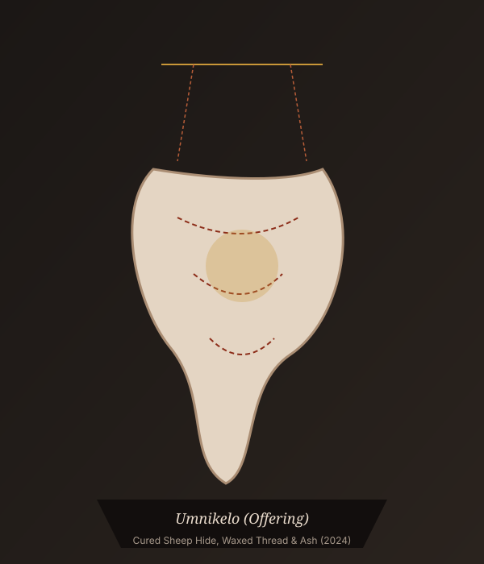

DMIS# 01
DMIS# 01
Kagiso Ndlovu
Unwoven Expectations
Deconstructed Canvas & Sheep Wool
View Artwork & Rationale →
“Art acts as an instrument of spatial reclamation—questioning whose heritage is held in honor, and asserting where young South Africans claim their sacred ground.”

In partnership with award-winning sculptor Snelihle Maphumulo, thirteen visual arts learners produced original works probing cultural elasticity, gendered domesticity, and the territorial limits of youth autonomy.
DMIS# 01
 DMIS# 02
DMIS# 02
 DMIS# 03
DMIS# 03
 DMIS# 04
DMIS# 04
 DMIS# 05
DMIS# 05
 DMIS# 06
DMIS# 06
 DMIS# 07
DMIS# 07
 DMIS# 08
DMIS# 08
 DMIS# 09
DMIS# 09
 DMIS# 10
DMIS# 10
 DMIS# 11
DMIS# 11
 DMIS# 12
DMIS# 12
 DMIS# 13
DMIS# 13
Snelihle Maphumulo (b. 2002, Durban) is a sculptor and Rhodes University Fine Art alumna. A two-time Merit Award recipient at the Sasol New Signatures competition (2024 & 2025), Maphumulo investigates Zulu traditions, female vulnerability, and spiritual endurance through cured sheep hide installations.
Recorded conversation with visiting artist Snelihle Maphumulo and Grade 11 Visual Arts learners.
Engaging with visiting sculptor Snelihle Maphumulo allowed learners to examine how personal identity claims space in South Africa. Through collaborative interview design and tactile 1-day studio production, the students discovered that their voices are not peripheral—they are central to the living tapestry of our culture.